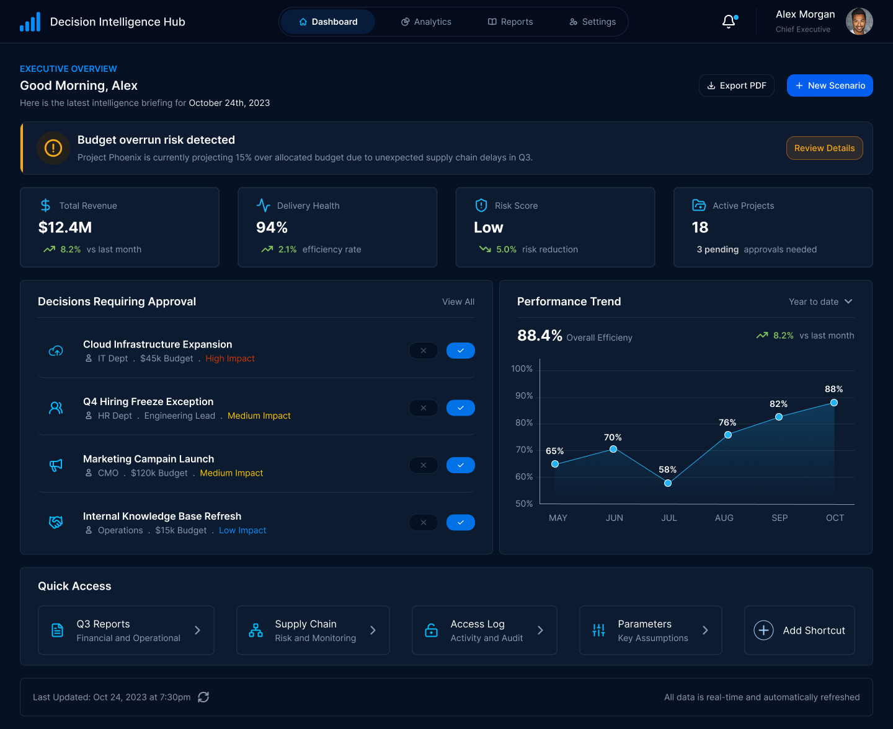
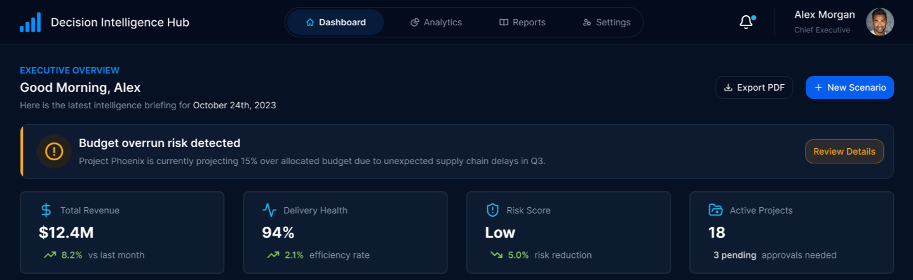
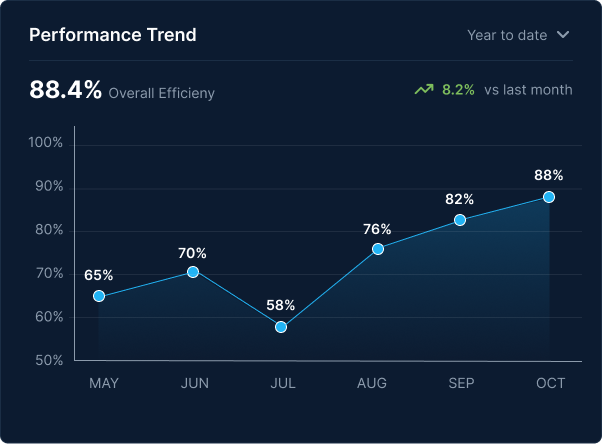
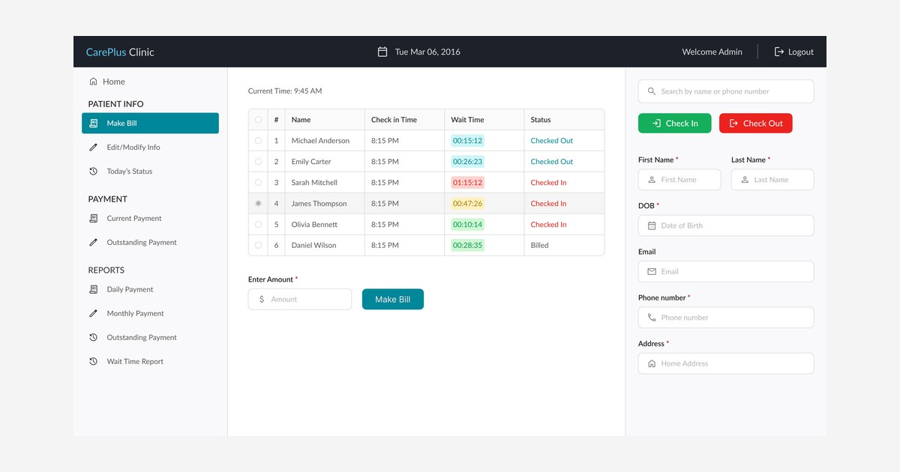
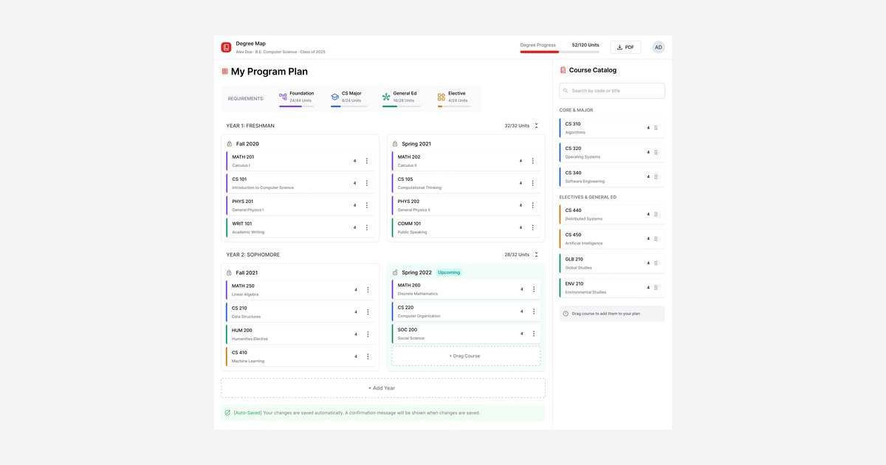
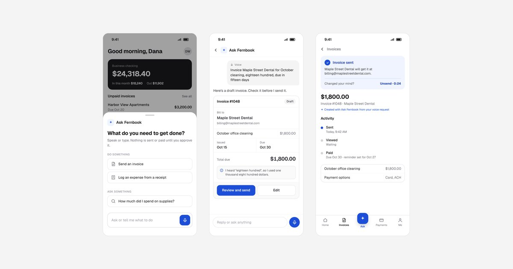

Decision Intelligence Hub
A dashboard, approval, and scenario tool for executive teams, specified through to engineering handoff, though it didn't ship.

Decisions were happening everywhere except where they should
Organizations often evaluate initiatives across spreadsheets, decks, and disconnected tools, slowing decisions and hiding visibility.
End-to-end ownership across the full design lifecycle
Product Strategy
Translating business goals into a prioritized feature set, working with engineering and product leads to align direction with technical constraints.
Information Architecture
Structuring a data-dense interface so critical information surfaces at the right moment, never buried.
Decision & Interaction Design
Designing approval flows, alerts, and decision points that move executives from insight to action.
Data Visualization
Turning performance, risk, and operational data into visual patterns understood at a glance.
Strategic decisions were fragmented across four different tools
Executives pulled from disconnected systems: inconsistent requests, scenario analysis in spreadsheets, approvals over email, visibility a week behind.
Four product priorities
Speed up executive decisions
Surface the right request, with context, at the right moment, and close approvals across IT, HR, and Finance without weeks of back-and-forth.
Centralize & visualize the portfolio
Replace spreadsheets and email with one place where every initiative lives, compared in real time instead of a weekly report.
Enable scenario comparison
Let executives model the impact of different decisions before committing, replacing gut instinct with structured analysis.
Support cross-functional approvals
Bring IT, HR, Finance, and executive leadership into one approval loop, removing the back-and-forth that stretched timelines across weeks.
One product, one decision loop
Five stages connect awareness to action.
A four-color semantic system, not decoration
Blue anchors the brand and primary actions, green signals positive performance, amber highlights warnings and emerging risks, and red marks high-impact items that need a decision first. Each color has a defined role and is applied consistently across modules, supported by neutral surfaces and accessible contrast.
The rule: red never decorates. If something is red, it needs a decision before anything else on the screen.
Typography: every number has the same anatomy
On a data-dense screen, type does the ranking. Color is saved for meaning, so size and weight carry the hierarchy.
- What, how much, compared to what. Every performance KPI reads label, value, then change with its baseline. A number without a comparison isn't a decision input.
- One large number per card. The value is the only large text on a card, so the eye lands on it first.
- Short, consistent units. $12.4M, $45k, 94%. Executives compare across cards, so the format never changes.
Every placement is a decision about priority
The dashboard is an action surface, not a reporting one. Everything on it exists because an executive needs it first, or it gives context for a decision in progress.
The alert banner sits above the KPIs because a risk outranks a status
KPI cards show current state; an alert signals it's about to change. A budget overrun below a revenue number would mean celebrating $12.4M while Project Phoenix burns its contingency. The alert comes first, always, with a direct path to resolution.
Considered: routing alerts to a notification bell. Rejected because a risk one click away is a risk that waits until the next meeting.

Approvals appear as a primary module, not a notification badge
Approval requests are actions, not context. Previously they arrived as emails and were discussed in meetings. Elevating them to a primary module means a Chief Executive opening the platform at 8am sees exactly what needs a decision: department, budget, both actions visible. No inbox required.
Considered: keeping approvals in email with a link into the Hub. Rejected because it keeps the inbox as the real workflow, and the context executives need lives in the Hub.
Performance Trend lives beside decisions, not beneath them
An executive approving a $45k expansion needs the efficiency trend before clicking Approve. The chart sits in the same tier as the approval queue because both refresh on the same real-time pipeline; batch reporting would've forced separate views. The layout replaces what a meeting used to do.
Considered: a separate analytics tab. Rejected because switching views before approving means decisions get made without the trend.

How far the work went
The Hub was designed through to engineering handoff. Architecture, dashboard, approval flow, and scenario comparison were specified and validated with stakeholders, but priorities shifted before production. Design work I stand behind, not a live product.
A single surface for the entire decision cycle
The design consolidated spreadsheets, email, meetings, and decks into one surface for monitoring, evaluation, and approval.
Designing for decisions, not just information
This reinforced how much hierarchy matters in high-stakes interfaces: not surfacing everything, but making the right thing visible with the next action obvious.
What worked
- Prioritizing decisions and risks over secondary analytics on the executive dashboard.
- Using visual hierarchy and restrained color to distinguish signals without overwhelming the interface.
- Connecting monitoring, analysis, and approval into one continuous decision workflow.
What I'd do differently
- Validate the dashboard hierarchy with executive users earlier.
- Explore the scenario simulator further: how complex financial parameters are presented and compared.
- Extend approvals to mobile for decisions made away from the desktop.
Keep exploring


